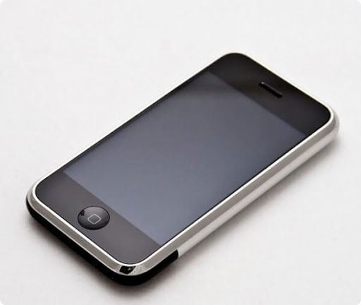
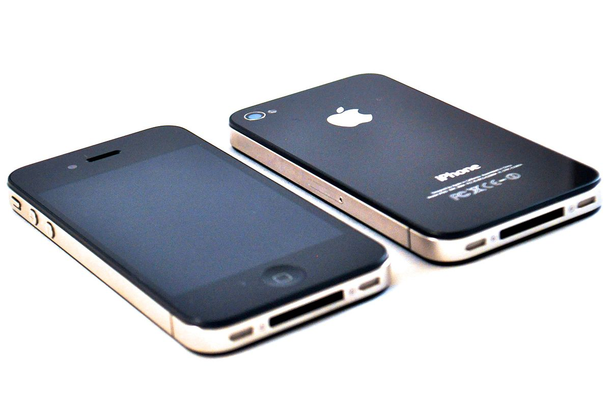
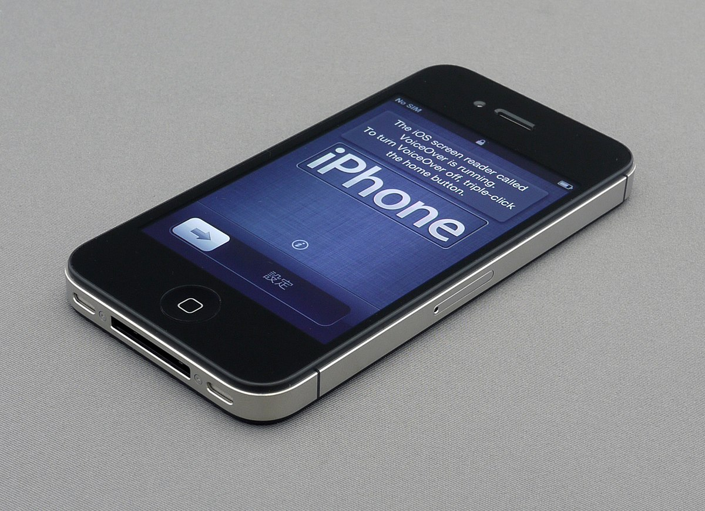
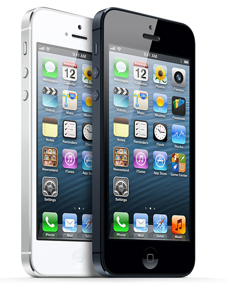
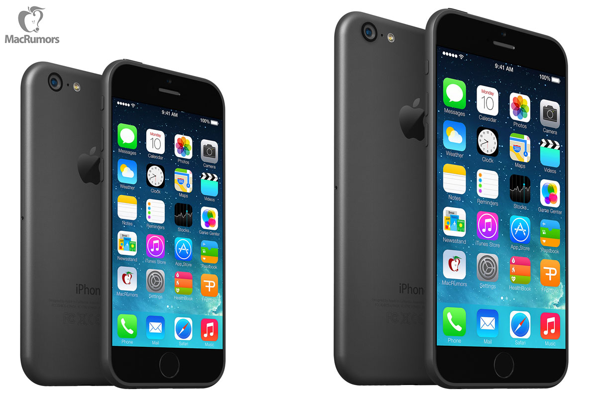
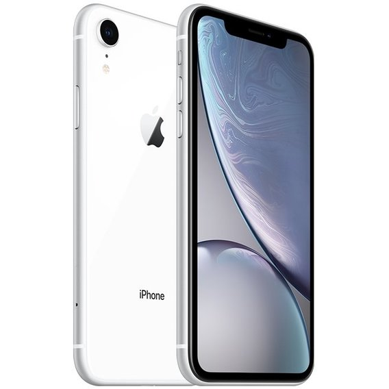

iPhone первого поколения
iPhone первого поколения был представлен на выставке Macworld 9 января 2007 года,[24] а 30 июня того же года появился в магазинах. Он имел алюминиевую заднюю панель и небольшую пластиковую крышку в нижней части аппарата, закрывавшую антенны GSM-приёмника и Wi-Fi/Bluetooth. Новый смартфон, как и предполагалось, объединил в себе все возможности телефона, музыкального плеера и карманного компьютера[18]. Однако он обладал и рядом недостатков. Один из наиболее существенных, вызвавший наибольшую критику, — отсутствие поддержки 3G, приведшее к необходимости использования для доступа в Интернет существенно менее скоростной технологии EDGE.[25] Важность поддержки 3G для устройства, позиционируемого как интернет-коммуникатор, привела к тому, что именно этот аспект вызвал наибольшее количество фантазий относительно времени появления данной технологии в iPhone.[26] По безопасности iPhone уступал коммуникаторам BlackBerry[27] и поэтому не получил распространения в корпоративном сегменте. Первый iPhone официально не поддерживал сервис коротких мультимедийных сообщений MMS из-за его низкой популярности, но умельцы научились и сделали приложение для передачи MMS, которое неофициально можно было установить в iPhone.
Цена iPhone в момент начала продаж составляла 499 долларов за модель с 4 ГБ и 599 долларов за модель с 8 ГБ встроенной памяти. Также позже вышла модель с 16 ГБ.[28]

iPhone 4
Данная модель получила название iPhone 4, без буквы «G», вероятно, из-за отсутствия поддержки сетей четвёртого поколения (4G). Рисунок приведен ниже
.iPhone 4 был представлен Стивом Джобсом на ежегодной конференции WWDC 7 июня 2010 года.

Цена iPhone 4 с двухлетним контрактом от AT&T в момент начала продаж составила 199 долларов за модель с 16 ГБ и 299 долларов за модель с 32 ГБ встроенной памяти.[34] 11 января 2011 года Apple представила iPhone 4 для оператора Verizon — первую модель iPhone, работающую в сетях CDMA. 14 июня 2011 года Apple официально начинает продажи «разлоченных» (работающих с любым оператором) GSM iPhone 4.[35] 13 сентября 2016 года компания Apple прекратила техническую поддержку устройства.[36]
iPhone 4s
4 октября 2011 года в 10 часов по тихоокеанскому времени в штаб-квартире компании Apple в Купертино началось мероприятие «Let’s Talk iPhone», на котором была представлена новая модель iPhone — 4s («s» значит Siri[55], а не «speed», как в случае с 3GS).

Вместо привычного публике Стива Джобса смартфон представил Тим Кук, его преемник на посту генерального директора Apple (Стив Джобс скончался на следующий день после презентации, 5 октября 2011 года).
Основные нововведения:
- Двухъядерный микропроцессор Apple A5 с тактовой частотой 1 ГГц (программно занижена до 800 МГц)
- Улучшенная 8-мп камера с поддержкой записи Full HD-видео 1080p
- Виртуальный помощник Siri
- Обновлённая операционная система iOS 5 (поддерживается также актуальная версия iOS 9.3.6)
- Добавлена поддержка ГЛОНАСС
- Bluetooth версии 4.0
- Оперативная память — 512 МБ
iPhone 5
12 сентября 2012 года в Сан-Франциско, Калифорния, был представлен iPhone шестого поколения — iPhone 5.

Основные нововведения
- Увеличенный 4-дюймовый экран (против 3,5 дюйма у старых моделей)
- Двухъядерный микропроцессор Apple A6 с тактовой частотой 1,3 ГГц
- Увеличенный до 1 ГБ объём ОЗУ
- Обновлённая операционная система iOS 6
- Поддержка сим-карт стандарта «nano-SIM»
- Новый док-коннектор Lightning
- Поддержка LTE-сетей 4G
iPhone 6
9 вересня 2014 Apple провела заходи, представивши нові моделі. Презентацію провів голова корпорації Тім Кук.

По сравнению с предыдущими моделями, были обновлены:
- Экраны (4,7 дюйма, 1334×750 (326 ppi), соотношение сторон, близкое к 16:9), получившие название «Retina HD»
- Большая закруглённость углов (по сравнению с iPhone 5S)
- Закруглённость стекла на боковых гранях, которая ранее располагалась сверху, передвинута на боковую грань
- Используется обычное закаленное стекло, а не из синтетического сапфира, как ожидалось
- Смартфоны получили интерфейс NFC и позволяют производить бесконтактную оплату с помощью Apple Pay
- Установлено два акселерометра, точный шестиосевой от InvenSense и экономичный трехосевой акселерометр от Bosch
iPhone Xs, iPhone Xs Max и iPhone XR
Представлены 12 сентября 2018 года. Получили обновлённый процессор Apple А12 Bionic и сопроцессор М12. В iPhone XR используется ЖК-дисплей Liquid Retina с диагональю 6,1 дюйма. iPhone XS и XS Max получили OLED-дисплей с технологией HDR. iPhone XS внешне схож с iPhone X, а iPhone XS Max его увеличенная копия.

Главными нововведениями являются:
- Обновлённый процессор
- Увеличенная диагональ (только для iPhone XS Max)
- Вариант с увеличенной памятью (до 512 гигабайт)
- Новые цветовые оформления (золотой для iPhone XS и iPhone XS Max; белый, синий, коралловый, чёрный, жёлтый — для iPhone XR)
- Возможность подключения двух сим-карт, одна из которых физическая, вторая — виртуальная (eSIM)